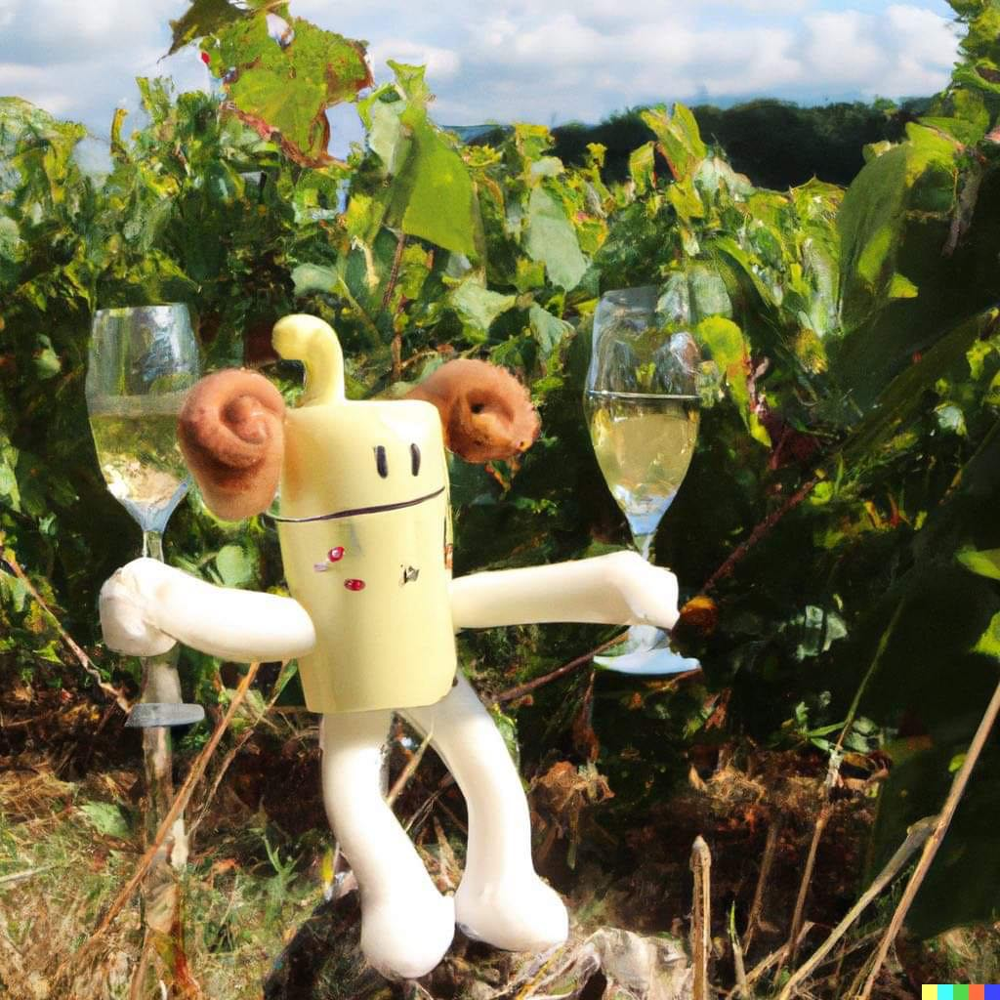
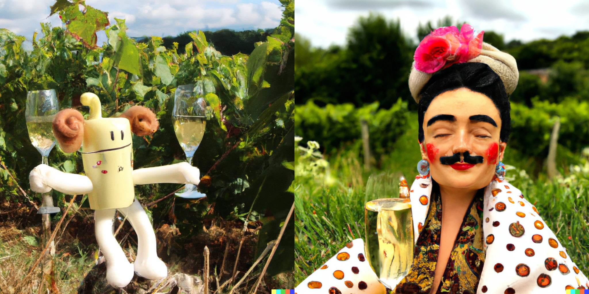

Cremulen

Cremulen er et mytologisk vesen som sies å være gul med hvite bein og armer, og som elsker å drikke cremant i det fri. Ifølge legenden ble cremulen skapt av gudene for å feire og nyte de gode tingene i livet, og den er kjent for sin gode natur og sitt positive syn på verden.
Cremulen er også kjent for sin store appetitt på cremant, en fransk musserende vin som lages av druer fra alle andre steder i Frankrike enn Champagne-området. Den sies å kunne drikke store mengder av denne vinen uten å bli beruset, og den nyter gjerne cremant i selskap med sine venner og familie.
I mytologien rundt cremulen finnes det mange forskjellige historier og legender. Noen sier at cremulen har magiske evner som gjør at den kan lage cremant av hva som helst, mens andre hevder at den har en særlig evne til å skape god stemning og glede der den ferdes. Uansett hva man tror på, er cremulen et elsket og respektert vesen i mytologien, og det sies at den bringer lykke og glede til alle som får oppleve den.
Navnet "Cremulen" har sannsynligvis sin opprinnelse i det franske språket, da navnet inneholder deler av navnet til cremant, den musserende vinen som cremulen sies å elske. Det er mulig at navnet til cremulen har blitt påvirket av andre språk eller kulturer også, men dette har man ikke beviser for i forskningen.
Cremulens dag, 28. mai
Cremulens dag feires tradisjonelt med drikke, spising, dansing og glede. Det sies at cremulen selv elsker å delta i feiringen, og at den gjerne dukker opp for å dele sin gode natur og sin kjærlighet for cremant med alle som feirer.
Det er vanlig å lage en stor fest på denne dagen, med masse god mat, drikke og underholdning. Mange velger å lage sine egne cremant-baserte drikker til festen, eller å kjøpe inn en rekke ulike varianter av cremant for å feire cremulen på denne spesielle dagen.
Det er også vanlig å kle seg i fargerike og festlige klær for å markere dagen, og mange velger å pynte seg med fjær, perler og andre dekorasjoner for å vise sin begeistring for cremulen og dens kultur.
Uansett hvordan man velger å feire, er Cremulens dag en dag for glede, fellesskap og feiring av det gode i livet.
Cremulen er kjent for å være en glad og munter skapning, og fargerike fjær er et symbol på hans livlige og fargerike personlighet. Fjær symboliserer også frihet og bevegelse, noe som passer godt med Cremulens utforskende og eventyrlystne sinn. Ved å pynte seg med fjær, kan man vise sin støtte til Cremulen og hans holdning til å utforske verden og nyte livet til det fulle.
Man pynter seg også med fjær for å markere Cremulens bånd til naturen. Cremulen elsker å tilbringe tid ute i det fri, og fjær er et symbol på hans tilknytning til og respekt for naturen. Pynting med fjær er en måte å vise sin beundring for Cremulen og hans forhold til naturen på.
Cremulens dag feires for å hedre og ære cremulen, det mytologiske vesenet som sies å elske cremant og å bringe lykke og glede til alle som får oppleve den.
Feiringen av cremulen og dens dag har sin opprinnelse i gammel mytologi, og det sies at dagen ble innført for å markere starten på sommeren og den tiden på året da solen skinner og naturen blomstrer. Cremulen selv er et symbol på glede og livsglede, og dets dag feires derfor som en hyllest til dette vesenet og dets positive innflytelse på verden.
I løpet av årene har Cremulens dag blitt en viktig kulturdag i mange samfunn, og den feires av mennesker over hele verden som en dag for glede, fellesskap og feiring av det gode i livet.
Leker og spill på Cremulens dag
Det er vanlig å feire Cremulens dag med drikke, spising, dansing og glede, og det er også vanlig å lage ulike typer underholdning og aktiviteter for å få folk i feststemning.
Noen velger å lage leker eller spill som passer inn i temaet for dagen, for eksempel quiz-konkurranser om cremant eller leker som involverer cremant på en eller annen måte. Det kan også være at man har ulike typer musikalsk underholdning eller dans, eller at man setter opp scener for ulike kunstneriske forestillinger.
Noen vanlige leker er:
-
Cremant-pong: Dette er en variant av bordtennispong som spilles med cremant i stedet for øl. Man trenger to pingpong-racketer og en ball, og man kan lage en enkel bordtenniskonstruksjon ved å sette opp to pappkasser eller lignende. Man spiller ved å slå ballen over bordet til motstanderen, og den som ikke får slått ballen tilbake må drikke et glass cremant. Spillet fortsetter til en person vinner, eller til alle deltakerne er for full til å fortsette å spille.
-
Cremant-stafett: Dette er en lagkonkurranse hvor deltakerne skal løpe med et glass cremant i hendene mens de prøver å holde så mye som mulig av vinen i glasset. Man kan sette opp ulike hinderløyper eller andre fysiske utfordringer som deltakerne må klare seg gjennom mens de holder på glasset. Hvert lag består av fire deltakere, og hvert lag må løpe en tur gjennom løypa mens de prøver å holde så mye som mulig av cremanten i glasset. Laget som har mest cremant igjen i glasset når alle har løpt sin tur, vinner.
-
Creme brulee-konkurranse: deltakerne skal lage den beste creme brulee med cremant i smaken.
-
Blindsmaking: deltakerne skal gjette hvilken type cremant de drikker mens de smaker på ulike varianter.
-
"Cremant-kastelek": deltakerne skal prøve å kaste et glass cremant så langt som mulig.
Uansett hvordan man velger å feire Cremulens dag, er det viktigste at man har det gøy og nyter tiden sammen med venner og familie.
Historier om Cremulen
Cremulen og surmulene
En gang var Cremulen på jakt etter den perfekte plassen å nyte sin cremant. Han hadde hørt om en idyllisk lille innsjø som skulle være det ultimate stedet å slappe av og nyte livet.
Så Cremulen dro av sted, full av forventninger. Men da han kom til innsjøen, var den allerede befolket av en gruppe surmuler som hadde lagt beslag på alle de beste plassene. De hadde ingen interesse av å dele, og Cremulen ble fortalt å dra videre.
Cremulen var lei seg, men bestemte seg for å ikke la seg knekke. Han tenkte seg om og kom opp med en plan. Han ville trylle innsjøen om til cremant!
Han satte seg ned ved vannkanten og begynte å trylle. Etter hvert som han tryllet, begynte vannet å skifte farge, fra blått til gult. Cremulen fortsatte å trylle, og til slutt var hele innsjøen blitt til cremant.
Da surmulene så dette, ble de så overrasket at de begynte å le. De kunne ikke tro at Cremulen hadde tryllet hele innsjøen om til cremant! Plutselig følte de at de hadde mye til felles med denne søte, tryllekraftige skapningen, og de inviterte ham til å bli og nyte cremanten sammen med dem.
Fra den dagen av ble Cremulen og surmulene bestevenner, og de tilbragte mange lykkelige dager sammen ved innsjøen, nyter cremant og spredte glede og god stemning rundt seg.
Cremulen og det kjedelige kontoret og Mr. Tristeste Tråkkesti
En dag, på et kontor som så ut til å være laget for å frata alle menneskene for gleden i livet, dukket Cremulen opp. Han hadde hørt rykter om at det var trist og kjedelig på dette kontoret, og han bestemte seg for å gjøre noe med det.
Mens han vandret gjennom kontorlandskapet, så han en sur og lei skapning sittende ved et skrivebord. Denne skapningen, som gikk under navnet Mr. Tristeste Tråkketur, hatet alt som hadde med glede og moro å gjøre. Han likte ikke cremant, og han likte ikke Cremulen.
Cremulen visste med en gang at han måtte gjøre noe for å løfte stemningen også for Mr. Tristeste Tråkketur. Han begynte å trylle, og plutselig begynte det å regne cremant fra taket. Alle ansatte stirret opp på himmelen, forundret over dette mirakelet.
Mr. Tristeste Tråkketur så ut til å være den eneste som ikke ble imponert. Han broyte seg og fortsatte å sitte ved sitt skrivebord, mens alle andre danset og koste seg i regnet av cremant.
Men Cremulen ga ikke opp. Han danset og sang, og til slutt begynte Mr. Tristeste Tråkketur å lete etter en lille smilebue. Til slutt klarte Cremulen å overtale Mr. Tristeste Tråkketur til å prøve litt cremant, og da smeltet selv den sureste av alle skapninger.
Fra den dagen av, ble Mr. Tristeste Tråkketur en del av feiringen på kontoret, og lærte å kose seg og ha det gøy.
Cremulens venner
Cremulen og Frida Kahlo hadde et langt og dypt vennskap, og de hadde mye til felles. Frida Kahlo var en kunstner som elsket å feire livet, og Cremulen var en skapning som også elsket å feire. De delte en kjærlighet til cremant, og de tilbragte mange gode dager sammen med å kose seg og ha det gøy.
Cremulen var alltid imponert over Frida Kahlos kunst, og han elsket å se henne male. Frida Kahlo, på sin side, elsket å ha Cremulen rundt seg. Hun syntes at hans positive energi og glede smittet av seg, og hun ble alltid i bedre humør når han var i nærheten.
Cremulen og Frida Kahlo var alltid der for hverandre, og de støttet hverandre gjennom tykt og tynt. Selv om de hadde sine uenigheter fra tid til annen, var de alltid der for hverandre og elsket hverandre uansett.
Sånn, min venn, er historien om vennskapet mellom Cremulen og Frida Kahlo, to skapninger som elsket å feire livet og hadde massevis av glede sammen.
